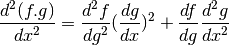
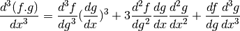

GPy.util package¶
Submodules¶
GPy.util.caching module¶
-
class
GPy.util.caching.Cache_this(limit=5, ignore_args=(), force_kwargs=())[source]¶ Bases:
objectA decorator which can be applied to bound methods in order to cache them
-
class
GPy.util.caching.Cacher(operation, limit=5, ignore_args=(), force_kwargs=())[source]¶ Bases:
object-
add_to_cache(cache_id, inputs, output)[source]¶ This adds cache_id to the cache, with inputs and output
-
combine_inputs(args, kw, ignore_args)[source]¶ Combines the args and kw in a unique way, such that ordering of kwargs does not lead to recompute
-
ensure_cache_length(cache_id)[source]¶ Ensures the cache is within its limits and has one place free
-
on_cache_changed(direct, which=None)[source]¶ A callback funtion, which sets local flags when the elements of some cached inputs change
this function gets ‘hooked up’ to the inputs when we cache them, and upon their elements being changed we update here.
-
GPy.util.classification module¶
-
GPy.util.classification.conf_matrix(p, labels, names=['1', '0'], threshold=0.5, show=True)[source]¶ Returns error rate and true/false positives in a binary classification problem - Actual classes are displayed by column. - Predicted classes are displayed by row.
Parameters: - p – array of class ‘1’ probabilities.
- labels – array of actual classes.
- names – list of class names, defaults to [‘1’,‘0’].
- threshold – probability value used to decide the class.
- show (False|True) – whether the matrix should be shown or not
GPy.util.config module¶
GPy.util.datasets module¶
Check with the user that the are happy with terms and conditions for the data set.
-
GPy.util.datasets.cifar10_patches(data_set='cifar-10')[source]¶ The Candian Institute for Advanced Research 10 image data set. Code for loading in this data is taken from this Boris Babenko’s blog post, original code available here: http://bbabenko.tumblr.com/post/86756017649/learning-low-level-vision-feautres-in-10-lines-of-code
-
GPy.util.datasets.cmu_mocap(subject, train_motions, test_motions=[], sample_every=4, data_set='cmu_mocap')[source]¶ Load a given subject’s training and test motions from the CMU motion capture data.
-
GPy.util.datasets.cmu_mocap_35_walk_jog(data_set='cmu_mocap')[source]¶ Load CMU subject 35’s walking and jogging motions, the same data that was used by Taylor, Roweis and Hinton at NIPS 2007. but without their preprocessing. Also used by Lawrence at AISTATS 2007.
-
GPy.util.datasets.cmu_mocap_49_balance(data_set='cmu_mocap')[source]¶ Load CMU subject 49’s one legged balancing motion that was used by Alvarez, Luengo and Lawrence at AISTATS 2009.
-
GPy.util.datasets.cmu_urls_files(subj_motions, messages=True)[source]¶ Find which resources are missing on the local disk for the requested CMU motion capture motions.
-
GPy.util.datasets.creep_data(data_set='creep_rupture')[source]¶ Brun and Yoshida’s metal creep rupture data.
-
GPy.util.datasets.crescent_data(num_data=200, seed=10000)[source]¶ Data set formed from a mixture of four Gaussians. In each class two of the Gaussians are elongated at right angles to each other and offset to form an approximation to the crescent data that is popular in semi-supervised learning as a toy problem.
param num_data_part: number of data to be sampled (default is 200). type num_data: int param seed: random seed to be used for data generation. type seed: int
-
GPy.util.datasets.data_available(dataset_name=None)[source]¶ Check if the data set is available on the local machine already.
-
GPy.util.datasets.data_details_return(data, data_set)[source]¶ Update the data component of the data dictionary with details drawn from the data_resources.
-
GPy.util.datasets.decampos_digits(data_set='decampos_characters', which_digits=[0, 1, 2, 3, 4, 5, 6, 7, 8, 9])[source]¶
-
GPy.util.datasets.della_gatta_TRP63_gene_expression(data_set='della_gatta', gene_number=None)[source]¶
-
GPy.util.datasets.download_data(dataset_name=None)[source]¶ Check with the user that the are happy with terms and conditions for the data set, then download it.
-
GPy.util.datasets.download_url(url, store_directory, save_name=None, messages=True, suffix='')[source]¶ Download a file from a url and save it to disk.
-
GPy.util.datasets.football_data(season='1314', data_set='football_data')[source]¶ Football data from English games since 1993. This downloads data from football-data.co.uk for the given season.
-
GPy.util.datasets.global_average_temperature(data_set='global_temperature', num_train=1000, refresh_data=False)[source]¶
-
GPy.util.datasets.google_trends(query_terms=['big data', 'machine learning', 'data science'], data_set='google_trends', refresh_data=False)[source]¶ Data downloaded from Google trends for given query terms. Warning, if you use this function multiple times in a row you get blocked due to terms of service violations. The function will cache the result of your query, if you wish to refresh an old query set refresh_data to True. The function is inspired by this notebook: http://nbviewer.ipython.org/github/sahuguet/notebooks/blob/master/GoogleTrends%20meet%20Notebook.ipynb
-
GPy.util.datasets.hapmap3(data_set='hapmap3')[source]¶ The HapMap phase three SNP dataset - 1184 samples out of 11 populations.
SNP_matrix (A) encoding [see Paschou et all. 2007 (PCA-Correlated SNPs...)]: Let (B1,B2) be the alphabetically sorted bases, which occur in the j-th SNP, then
/ 1, iff SNPij==(B1,B1)- Aij = | 0, iff SNPij==(B1,B2)
- -1, iff SNPij==(B2,B2)
The SNP data and the meta information (such as iid, sex and phenotype) are stored in the dataframe datadf, index is the Individual ID, with following columns for metainfo:
- family_id -> Family ID
- paternal_id -> Paternal ID
- maternal_id -> Maternal ID
- sex -> Sex (1=male; 2=female; other=unknown)
- phenotype -> Phenotype (-9, or 0 for unknown)
- population -> Population string (e.g. ‘ASW’ - ‘YRI’)
- rest are SNP rs (ids)
More information is given in infodf:
- Chromosome:
- autosomal chromosemes -> 1-22
- X X chromosome -> 23
- Y Y chromosome -> 24
- XY Pseudo-autosomal region of X -> 25
- MT Mitochondrial -> 26
Relative Positon (to Chromosome) [base pairs]
-
GPy.util.datasets.oil(data_set='three_phase_oil_flow')[source]¶ The three phase oil data from Bishop and James (1993).
-
GPy.util.datasets.olivetti_glasses(data_set='olivetti_glasses', num_training=200, seed=10000)[source]¶
-
GPy.util.datasets.olympic_sprints(data_set='rogers_girolami_data')[source]¶ All olympics sprint winning times for multiple output prediction.
-
GPy.util.datasets.toy_rbf_1d(seed=10000, num_samples=500)[source]¶ Samples values of a function from an RBF covariance with very small noise for inputs uniformly distributed between -1 and 1.
Parameters: - seed (int) – seed to use for random sampling.
- num_samples (int) – number of samples to sample in the function (default 500).
GPy.util.debug module¶
The module for some general debug tools
GPy.util.decorators module¶
GPy.util.diag module¶
-
GPy.util.diag.add(A, b, offset=0)[source]¶ Add b to the view of A in place (!). Returns modified A. Broadcasting is allowed, thus b can be scalar.
if offset is not zero, make sure b is of right shape!
Parameters: - A (ndarray) – 2 dimensional array
- b (ndarray-like) – either one dimensional or scalar
- offset (int) – same as in view.
Return type: view of A, which is adjusted inplace
-
GPy.util.diag.divide(A, b, offset=0)[source]¶ Divide the view of A by b in place (!). Returns modified A Broadcasting is allowed, thus b can be scalar.
if offset is not zero, make sure b is of right shape!
Parameters: - A (ndarray) – 2 dimensional array
- b (ndarray-like) – either one dimensional or scalar
- offset (int) – same as in view.
Return type: view of A, which is adjusted inplace
-
GPy.util.diag.multiply(A, b, offset=0)¶ Times the view of A with b in place (!). Returns modified A Broadcasting is allowed, thus b can be scalar.
if offset is not zero, make sure b is of right shape!
Parameters: - A (ndarray) – 2 dimensional array
- b (ndarray-like) – either one dimensional or scalar
- offset (int) – same as in view.
Return type: view of A, which is adjusted inplace
-
GPy.util.diag.subtract(A, b, offset=0)[source]¶ Subtract b from the view of A in place (!). Returns modified A. Broadcasting is allowed, thus b can be scalar.
if offset is not zero, make sure b is of right shape!
Parameters: - A (ndarray) – 2 dimensional array
- b (ndarray-like) – either one dimensional or scalar
- offset (int) – same as in view.
Return type: view of A, which is adjusted inplace
-
GPy.util.diag.times(A, b, offset=0)[source]¶ Times the view of A with b in place (!). Returns modified A Broadcasting is allowed, thus b can be scalar.
if offset is not zero, make sure b is of right shape!
Parameters: - A (ndarray) – 2 dimensional array
- b (ndarray-like) – either one dimensional or scalar
- offset (int) – same as in view.
Return type: view of A, which is adjusted inplace
-
GPy.util.diag.view(A, offset=0)[source]¶ Get a view on the diagonal elements of a 2D array.
This is actually a view (!) on the diagonal of the array, so you can in-place adjust the view.
:param
ndarrayA: 2 dimensional numpy array :param int offset: view offset to give back (negative entries allowed) :rtype:ndarrayview of diag(A)>>> import numpy as np >>> X = np.arange(9).reshape(3,3) >>> view(X) array([0, 4, 8]) >>> d = view(X) >>> d += 2 >>> view(X) array([ 2, 6, 10]) >>> view(X, offset=-1) array([3, 7]) >>> subtract(X, 3, offset=-1) array([[ 2, 1, 2], [ 0, 6, 5], [ 6, 4, 10]])
GPy.util.functions module¶
GPy.util.gpu_init module¶
The package for scikits.cuda initialization
Global variables: initSuccess providing CUBLAS handle: cublas_handle
GPy.util.linalg module¶
-
GPy.util.linalg.DSYR_blas(A, x, alpha=1.0)[source]¶ Performs a symmetric rank-1 update operation: A <- A + alpha * np.dot(x,x.T)
Parameters: - A – Symmetric NxN np.array
- x – Nx1 np.array
- alpha – scalar
-
GPy.util.linalg.DSYR_numpy(A, x, alpha=1.0)[source]¶ Performs a symmetric rank-1 update operation: A <- A + alpha * np.dot(x,x.T)
Parameters: - A – Symmetric NxN np.array
- x – Nx1 np.array
- alpha – scalar
-
GPy.util.linalg.backsub_both_sides(L, X, transpose='left')[source]¶ Return L^-T * X * L^-1, assumuing X is symmetrical and L is lower cholesky
-
GPy.util.linalg.cholupdate(L, x)[source]¶ update the LOWER cholesky factor of a pd matrix IN PLACE
if L is the lower chol. of K, then this function computes L_ where L_ is the lower chol of K + x*x^T
-
GPy.util.linalg.dpotri(A, lower=1)[source]¶ Wrapper for lapack dpotri function
- DPOTRI - compute the inverse of a real symmetric positive
- definite matrix A using the Cholesky factorization A = U**T*U or A = L*L**T computed by DPOTRF
Parameters: - A – Matrix A
- lower – is matrix lower (true) or upper (false)
Returns: A inverse
-
GPy.util.linalg.dpotrs(A, B, lower=1)[source]¶ Wrapper for lapack dpotrs function :param A: Matrix A :param B: Matrix B :param lower: is matrix lower (true) or upper (false) :returns:
-
GPy.util.linalg.dtrtri(L)[source]¶ Inverts a Cholesky lower triangular matrix
Parameters: L – lower triangular matrix Return type: inverse of L
-
GPy.util.linalg.dtrtrs(A, B, lower=1, trans=0, unitdiag=0)[source]¶ Wrapper for lapack dtrtrs function
DTRTRS solves a triangular system of the form
A * X = B or A**T * X = B,where A is a triangular matrix of order N, and B is an N-by-NRHS matrix. A check is made to verify that A is nonsingular.
Parameters: - A – Matrix A(triangular)
- B – Matrix B
- lower – is matrix lower (true) or upper (false)
Returns: Solution to A * X = B or A**T * X = B
-
GPy.util.linalg.force_F_ordered(A)[source]¶ return a F ordered version of A, assuming A is triangular
-
GPy.util.linalg.force_F_ordered_symmetric(A)[source]¶ return a F ordered version of A, assuming A is symmetric
-
GPy.util.linalg.mdot(*args)[source]¶ Multiply all the arguments using matrix product rules. The output is equivalent to multiplying the arguments one by one from left to right using dot(). Precedence can be controlled by creating tuples of arguments, for instance mdot(a,((b,c),d)) multiplies a (a*((b*c)*d)). Note that this means the output of dot(a,b) and mdot(a,b) will differ if a or b is a pure tuple of numbers.
-
GPy.util.linalg.multiple_pdinv(A)[source]¶ Parameters: A – A DxDxN numpy array (each A[:,:,i] is pd) Rval invs: the inverses of A Rtype invs: np.ndarray Rval hld: 0.5* the log of the determinants of A Rtype hld: np.array
-
GPy.util.linalg.pca(Y, input_dim)[source]¶ Principal component analysis: maximum likelihood solution by SVD
Parameters: - Y – NxD np.array of data
- input_dim – int, dimension of projection
Rval X: - Nxinput_dim np.array of dimensionality reduced data
Rval W: - input_dimxD mapping from X to Y
-
GPy.util.linalg.pddet(A)[source]¶ Determinant of a positive definite matrix, only symmetric matricies though
-
GPy.util.linalg.pdinv(A, *args)[source]¶ Parameters: A – A DxD pd numpy array Rval Ai: the inverse of A Rtype Ai: np.ndarray Rval L: the Cholesky decomposition of A Rtype L: np.ndarray Rval Li: the Cholesky decomposition of Ai Rtype Li: np.ndarray Rval logdet: the log of the determinant of A Rtype logdet: float64
-
GPy.util.linalg.ppca(Y, Q, iterations=100)[source]¶ EM implementation for probabilistic pca.
Parameters: - Y (array-like) – Observed Data
- Q (int) – Dimensionality for reduced array
- iterations (int) – number of iterations for EM
-
GPy.util.linalg.symmetrify(A, upper=False)[source]¶ Take the square matrix A and make it symmetrical by copting elements from the lower half to the upper
works IN PLACE.
note: tries to use weave, falls back to a slower numpy version
-
GPy.util.linalg.symmetrify_weave(A, upper=False)[source]¶ Take the square matrix A and make it symmetrical by copting elements from the lower half to the upper
works IN PLACE.
GPy.util.linalg_gpu module¶
GPy.util.ln_diff_erfs module¶
-
GPy.util.ln_diff_erfs.ln_diff_erfs(x1, x2, return_sign=False)[source]¶ Function for stably computing the log of difference of two erfs in a numerically stable manner. :param x1 : argument of the positive erf :type x1: ndarray :param x2 : argument of the negative erf :type x2: ndarray :return: tuple containing (log(abs(erf(x1) - erf(x2))), sign(erf(x1) - erf(x2)))
Based on MATLAB code that was written by Antti Honkela and modified by David Luengo and originally derived from code by Neil Lawrence.
GPy.util.misc module¶
-
GPy.util.misc.chain_2(d2f_dg2, dg_dx, df_dg, d2g_dx2)[source]¶ Generic chaining function for second derivative

-
GPy.util.misc.chain_3(d3f_dg3, dg_dx, d2f_dg2, d2g_dx2, df_dg, d3g_dx3)[source]¶ Generic chaining function for third derivative

-
GPy.util.misc.kmm_init(X, m=10)[source]¶ This is the same initialization algorithm that is used in Kmeans++. It’s quite simple and very useful to initialize the locations of the inducing points in sparse GPs.
Parameters: - X – data
- m – number of inducing points
-
GPy.util.misc.linear_grid(D, n=100, min_max=(-100, 100))[source]¶ Creates a D-dimensional grid of n linearly spaced points
Parameters: - D – dimension of the grid
- n – number of points
- min_max – (min, max) list
-
GPy.util.misc.opt_wrapper(m, **kwargs)[source]¶ This function just wraps the optimization procedure of a GPy object so that optimize() pickleable (necessary for multiprocessing).
-
GPy.util.misc.param_to_array(*param)[source]¶ Convert an arbitrary number of parameters to :class:ndarray class objects. This is for converting parameter objects to numpy arrays, when using scipy.weave.inline routine. In scipy.weave.blitz there is no automatic array detection (even when the array inherits from :class:ndarray)
GPy.util.mocap module¶
-
class
GPy.util.mocap.acclaim_skeleton(file_name=None)[source]¶ Bases:
GPy.util.mocap.skeleton-
load_skel(file_name)[source]¶ Loads an ASF file into a skeleton structure.
Parameters: file_name – The file name to load in.
-
read_line(fid)[source]¶ Read a line from a file string and check it isn’t either empty or commented before returning.
-
resolve_indices(index, start_val)[source]¶ Get indices for the skeleton from the channels when loading in channel data.
-
-
GPy.util.mocap.load_text_data(dataset, directory, centre=True)[source]¶ Load in a data set of marker points from the Ohio State University C3D motion capture files (http://accad.osu.edu/research/mocap/mocap_data.htm).
-
GPy.util.mocap.parse_text(file_name)[source]¶ Parse data from Ohio State University text mocap files (http://accad.osu.edu/research/mocap/mocap_data.htm).
-
GPy.util.mocap.read_connections(file_name, point_names)[source]¶ Read a file detailing which markers should be connected to which for motion capture data.
-
GPy.util.mocap.rotation_matrix(xangle, yangle, zangle, order='zxy', degrees=False)[source]¶ Compute the rotation matrix for an angle in each direction. This is a helper function for computing the rotation matrix for a given set of angles in a given order.
Parameters: - xangle – rotation for x-axis.
- yangle – rotation for y-axis.
- zangle – rotation for z-axis.
- order – the order for the rotations.
-
class
GPy.util.mocap.skeleton[source]¶ Bases:
GPy.util.mocap.tree-
finalize()[source]¶ After loading in a skeleton ensure parents are correct, vertex orders are correct and rotation matrices are correct.
-
-
class
GPy.util.mocap.tree[source]¶ -
-
find_children()[source]¶ Take a tree and set the children according to the parents.
Takes a tree structure which lists the parents of each vertex and computes the children for each vertex and places them in.
-
find_parents()[source]¶ Take a tree and set the parents according to the children
Takes a tree structure which lists the children of each vertex and computes the parents for each vertex and places them in.
-
order_vertices()[source]¶ Order vertices in the graph such that parents always have a lower index than children.
-
swap_vertices(i, j)[source]¶ Swap two vertices in the tree structure array. swap_vertex swaps the location of two vertices in a tree structure array.
Parameters: - tree – the tree for which two vertices are to be swapped.
- i – the index of the first vertex to be swapped.
- j – the index of the second vertex to be swapped.
Rval tree: the tree structure with the two vertex locations swapped.
-
GPy.util.mpi module¶
GPy.util.multioutput module¶
-
GPy.util.multioutput.ICM(input_dim, num_outputs, kernel, W_rank=1, W=None, kappa=None, name='ICM')[source]¶ Builds a kernel for an Intrinsic Coregionalization Model
Input_dim: Input dimensionality (does not include dimension of indices)
Num_outputs: Number of outputs
Parameters: - kernel (a GPy kernel) – kernel that will be multiplied by the coregionalize kernel (matrix B).
- W_rank (integer) – number tuples of the corregionalization parameters ‘W’
-
GPy.util.multioutput.LCM(input_dim, num_outputs, kernels_list, W_rank=1, name='ICM')[source]¶ Builds a kernel for an Linear Coregionalization Model
Input_dim: Input dimensionality (does not include dimension of indices)
Num_outputs: Number of outputs
Parameters: - kernel (a GPy kernel) – kernel that will be multiplied by the coregionalize kernel (matrix B).
- W_rank (integer) – number tuples of the corregionalization parameters ‘W’
-
GPy.util.multioutput.Private(input_dim, num_outputs, kernel, output, kappa=None, name='X')[source]¶ Builds a kernel for an Intrinsic Coregionalization Model
Input_dim: Input dimensionality
Num_outputs: Number of outputs
Parameters: - kernel (a GPy kernel) – kernel that will be multiplied by the coregionalize kernel (matrix B).
- W_rank (integer) – number tuples of the corregionalization parameters ‘W’
GPy.util.netpbmfile module¶
Read and write image data from respectively to Netpbm files.
This implementation follows the Netpbm format specifications at http://netpbm.sourceforge.net/doc/. No gamma correction is performed.
The following image formats are supported: PBM (bi-level), PGM (grayscale), PPM (color), PAM (arbitrary), XV thumbnail (RGB332, read-only).
| Author: | Christoph Gohlke |
|---|---|
| Organization: | Laboratory for Fluorescence Dynamics, University of California, Irvine |
| Version: | 2013.01.18 |
Requirements¶
- CPython 2.7, 3.2 or 3.3
- Numpy 1.7
- Matplotlib 1.2 (optional for plotting)
Examples¶
>>> im1 = numpy.array([[0, 1],[65534, 65535]], dtype=numpy.uint16)
>>> imsave('_tmp.pgm', im1)
>>> im2 = imread('_tmp.pgm')
>>> assert numpy.all(im1 == im2)
-
GPy.util.netpbmfile.imread(filename, *args, **kwargs)[source]¶ Return image data from Netpbm file as numpy array.
args and kwargs are arguments to NetpbmFile.asarray().
>>> image = imread('_tmp.pgm')
-
GPy.util.netpbmfile.imsave(filename, data, maxval=None, pam=False)[source]¶ Write image data to Netpbm file.
>>> image = numpy.array([[0, 1],[65534, 65535]], dtype=numpy.uint16) >>> imsave('_tmp.pgm', image)
GPy.util.normalizer module¶
Created on Aug 27, 2014
@author: t-mazwie
-
class
GPy.util.normalizer.MeanNorm[source]¶ Bases:
GPy.util.normalizer.Norm
GPy.util.parallel module¶
The module of tools for parallelization (MPI)
GPy.util.pca module¶
Created on 10 Sep 2012
@author: Max Zwiessele @copyright: Max Zwiessele 2012
-
class
GPy.util.pca.PCA(X)[source]¶ Bases:
objectPCA module with automatic primal/dual determination.
-
plot_2d(X, labels=None, s=20, marker='o', dimensions=(0, 1), ax=None, colors=None, fignum=None, cmap=None, **kwargs)[source]¶ Plot dimensions dimensions with given labels against each other in PC space. Labels can be any sequence of labels of dimensions X.shape[0]. Labels can be drawn with a subsequent call to legend()
-
GPy.util.squashers module¶
GPy.util.subarray_and_sorting module¶
-
GPy.util.subarray_and_sorting.common_subarrays(X, axis=0)[source]¶ Find common subarrays of 2 dimensional X, where axis is the axis to apply the search over. Common subarrays are returned as a dictionary of <subarray, [index]> pairs, where the subarray is a tuple representing the subarray and the index is the index for the subarray in X, where index is the index to the remaining axis.
:param
np.ndarrayX: 2d array to check for common subarrays in :param int axis: axis to apply subarray detection over.When the index is 0, compare rows – columns, otherwise.In a 2d array: >>> import numpy as np >>> X = np.zeros((3,6), dtype=bool) >>> X[[1,1,1],[0,4,5]] = 1; X[1:,[2,3]] = 1 >>> X array([[False, False, False, False, False, False],
[ True, False, True, True, True, True], [False, False, True, True, False, False]], dtype=bool)>>> d = common_subarrays(X,axis=1) >>> len(d) 3 >>> X[:, d[tuple(X[:,0])]] array([[False, False, False], [ True, True, True], [False, False, False]], dtype=bool) >>> d[tuple(X[:,4])] == d[tuple(X[:,0])] == [0, 4, 5] True >>> d[tuple(X[:,1])] [1]
GPy.util.univariate_Gaussian module¶
-
GPy.util.univariate_Gaussian.inv_std_norm_cdf(x)[source]¶ Inverse cumulative standard Gaussian distribution Based on Winitzki, S. (2008)
-
GPy.util.univariate_Gaussian.std_norm_cdf(x)[source]¶ Cumulative standard Gaussian distribution Based on Abramowitz, M. and Stegun, I. (1970)
GPy.util.warping_functions module¶
-
class
GPy.util.warping_functions.TanhWarpingFunction(n_terms=3)[source]¶ Bases:
GPy.util.warping_functions.WarpingFunction-
f(y, psi)[source]¶ transform y with f using parameter vector psi psi = [[a,b,c]] ::math::f = sum_{terms} a * tanh(b*(y+c))
-
f_inv(y, psi, iterations=10)[source]¶ calculate the numerical inverse of f
Parameters: iterations – number of N.R. iterations
-
-
class
GPy.util.warping_functions.TanhWarpingFunction_d(n_terms=3)[source]¶ Bases:
GPy.util.warping_functions.WarpingFunction-
f_inv(z, psi, max_iterations=1000, y=None)[source]¶ calculate the numerical inverse of f
Parameters: max_iterations – maximum number of N.R. iterations
-